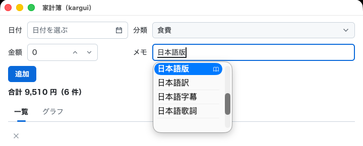
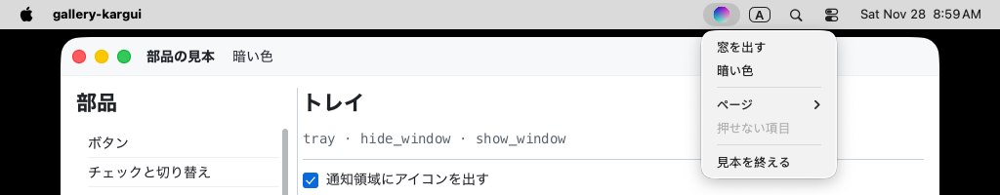
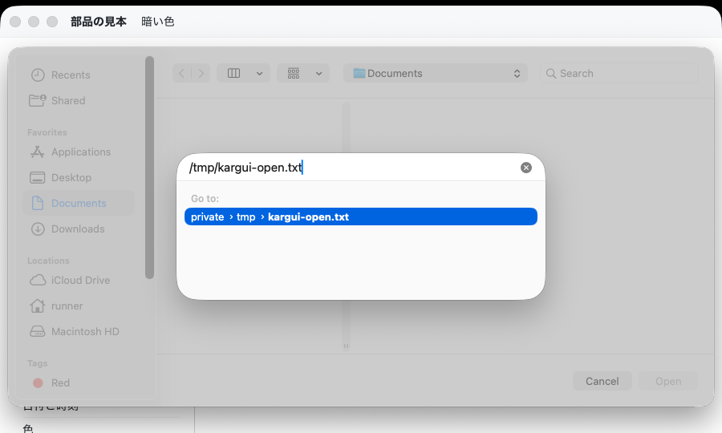

kargui 開発レポート ・ 第 23 章
Mac を持たずに macOS へ
kargui が macOS で動くようになりました。作者も私も Mac を持っていないので、作るたびに GitHub の CI の Mac で本物の窓を開き、外からマウスとキーの知らせを送って、写真と記録で確かめました。この章では、その確かめ方と、CI の Mac で見つけた癖と不具合を書きます。
この章で分かること
- 手元に無い OS の GUI を、CI だけで作って確かめる方法
- 自前の輪を持つフレームワークが、AppKit とどう付き合うか
- Mac の日本語入力（NSTextInputClient）の受け方と、CI の Mac の癖
- 信号の丸を残して、アプリが題の帯を描く形
- 確かめが気づかないうちに通らなくなるのを防ぐ見方
CI の Mac で作る
作者は Mac を使わないので、対応はするが費用は小さくしたい、と決めていました。そこで、公開のリポジトリなら無料で使える GitHub Actions の Mac（Apple Silicon）で作ることにしました。手の感触を確かめる日だけ、Mac を借ります。
CI の Mac は macOS 26 で、画面は 1024 × 768、倍率は 1 です。作業用のブランチに送るたびに、見本を本物の窓で開き、次の 3 つの道具で操作しました。
| 道具 | すること |
|---|---|
| mac-drive | 外から本物のクリック・引っ張り・ホイール・キー・文字を送る。入力の方法（日本語入力）の切り替え、明暗の切り替えの真似、読み上げの木の書き出しと押す操作、写真も受け持つ |
| mac-ime-ref | 日本語入力の受け方だけを持つ最小の参考のアプリ。CI の Mac の日本語入力が、その回に動くかを先に確かめる |
| mac-drag-source | ファイルを引っ張って落とす元のアプリ。メモ帳の見本へファイルを落とす |
見本は、自分で描いた絵を保存し、記録も書きます。CI は画面の写真と一緒に、それらを取り出せる形で残します。私はその写真と記録を読んで、次の直しを決めました。この章の写真は、どれも CI の Mac の画面です。
4 つの段階
| 段階 | 中身 |
|---|---|
| M1 窓 | AppKit の窓と自前の NSView。CPU の絵を Core Animation で出す。マウス・ホイール・キー・クリップボード・大きさの変更・閉じる |
| M2 日本語入力 | NSTextInputClient で、変換中の文字・文節・候補の窓の場所 |
| M3 アプリの仕組み | ファイルのダイアログ、読み上げ（accesskit_macos）、複数の窓、ほかのアプリから落とすファイル |
| M4 OS とのつなぎ | OS の言語・明暗・コントラスト、アプリのメニュー、メニューバーのトレイ、通知、kargui が描く題の帯 |
kargui はどの OS でも、知らせを待つ輪を自分で持ちます。macOS でも、AppKit の標準の輪（NSApp の run）は使わず、知らせを 1 つずつ取り出して AppKit に渡します。ところが、窓の縁を引っ張って大きさを変える間は、AppKit が知らせの受け渡しの中で自分の輪を回し、kargui の輪は止まります。最初の版は、その間に 1 回も描き直しませんでした。窓と App を共有の箱に入れ、大きさが変わった時の呼び返しの中から 1 フレームを回す形にして直しました。
日本語入力と、CI の Mac の癖
窓の中身を自前の NSView にし、日本語入力の受け方（NSTextInputClient）を持たせました。入力欄に焦点がある時は、キーを AppKit を通して日本語入力に渡します。変換中の文字は文節ごとに受け取り、候補の窓の場所はキャレットの位置で答えます。

CI の Mac の日本語入力には、癖がありました。最初に日本語入力を使ったアプリは、テキストエディットでも英字をそのまま通しました。同じアプリを開き直した時も、多くの回で動きませんでした。回によっては、参考のアプリでも全く動きません。そこで CI の手順では、先にテキストエディットと参考のアプリで日本語入力を使い、動く回かどうかを見てから kargui を試しています。変換中の Enter の確定は、参考のアプリでも届きませんでした。これらは借りる Mac で確かめます。
信号の丸を残した題の帯
アプリが題の帯に部品を置ける窓（Options::custom_title_bar）の形は、作者が決めました。左上の閉じる・最小化・全画面の丸（信号の丸）は OS に描かせ、その右に kargui が帯の中身を描きます。Safari や Xcode と同じ形です。

窓の中身を題の帯の下まで広げ、帯を透明にします。空の道具の帯を付けると帯が高くなり、信号の丸が帯の縦の真ん中に来ます。kargui は、信号の丸の右端から 12 空けた所（CI の Mac では 84）から帯の中身を並べます。帯の何も無い所を引っ張ると窓が動き、2 回押すと OS の設定どおりに最大化します。
もう 1 つ、Mac の決まりに合わせました。前面にない窓を押した 1 回目は、窓を前面にするだけで、部品は押しません。この直しの後、CI のファイルのダイアログの確かめが止まりました。ダイアログを閉じても元の窓が前面に戻っておらず、次の押下が「1 回目」と扱われていたためです。ダイアログを閉じた後に元の窓を前面に戻すようにしました。

通知は .app の束だけで
Mac の通知の仕組み（UNUserNotificationCenter）は、アプリが .app の束（Info.plist を持つ）でないと使えません。束でないアプリが使おうとすると、例外で止まります。作者と話して、束のアプリだけで動く形にしました。cargo run のように束でない時は、記録に notify.unavailable と書いて何もしません。
CI では、その場で見本を束にして試しました。kargui は許可を頼みましたが、CI の Mac は許可の窓を出さずに断りました（Notifications are not allowed for this application）。通知が出るか、押した答えが届くかは、借りる Mac で確かめます。
気づかずに通らなくなっていた確かめ
題の帯を作った後、CI の読み上げの確かめの記録を前の回と比べました。読み上げの操作で「ふつう」のボタンを押す確かめで、当たった所が中身の無いまとまり（AXGroup）になっていました。押せていた回はボタン（AXButton）に当たっていました。取り出して読んだ記録をさかのぼると、5 回続けて通っていませんでした。
読み上げが使われ始めると、kargui は「木は次のフレームで渡す」として輪を起こします。ところが、その知らせはどの窓にも向かないので、どの窓にも描き直しの印が立たず、木を渡すフレームが回りませんでした。それまで通っていたのは、ほかの理由で描き直しが続いていたためです。窓ごとに「木を渡してほしい」印を持たせて直し、ボタンを 2 回押せることを確かめました。
読み上げの確かめは、押せなくても段そのものは通る作りでした。CI が緑のままなので、5 回続けて見落としました。結果の中身（当たった部品の種類、押した回数）を前の回と比べてください。通るはずの物が通らない時に段を失敗にする作りなら、もっと良いです。
CI の手順にも、直す所がありました。1 つの確かめで見本が止まると、その後の確かめが全部走りませんでした。止まった確かめの名前を数え、全部を走らせてから最後に失敗にする形に変えました。
次の段階
macOS の版は main に入り、CI の Mac で 19 の確かめが通っています。残りは、Retina（倍率 2）の画面と、借りる Mac での手の確かめ（日本語入力の感触、通知の表示と答え、題の帯の見た目と動き）です。その後、macOS に対応した版として 0.5.0 を出す予定です。